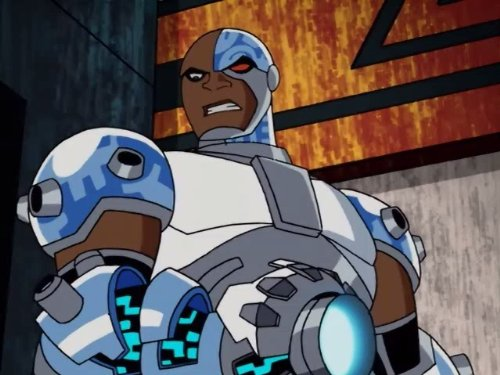
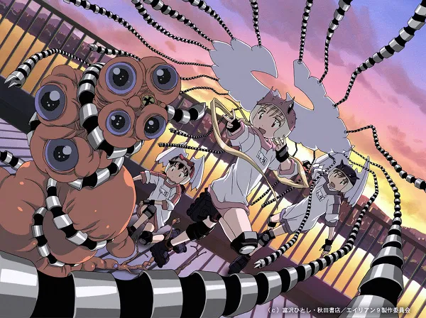
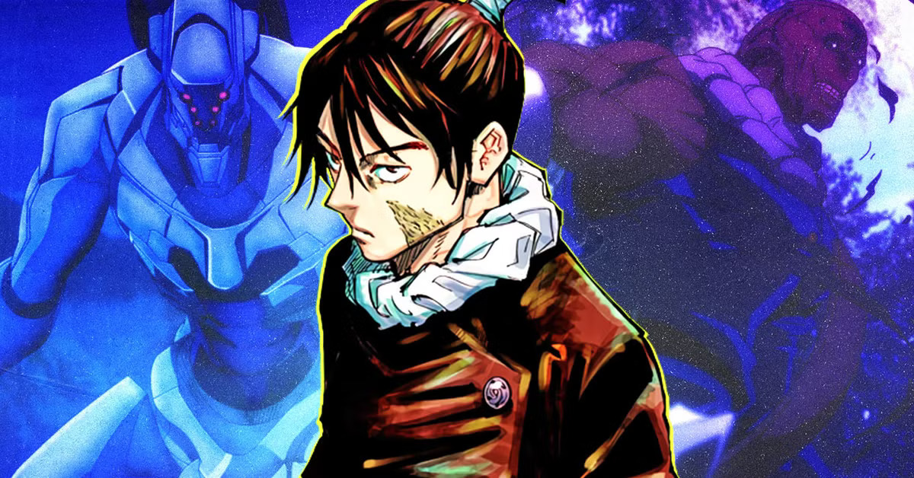
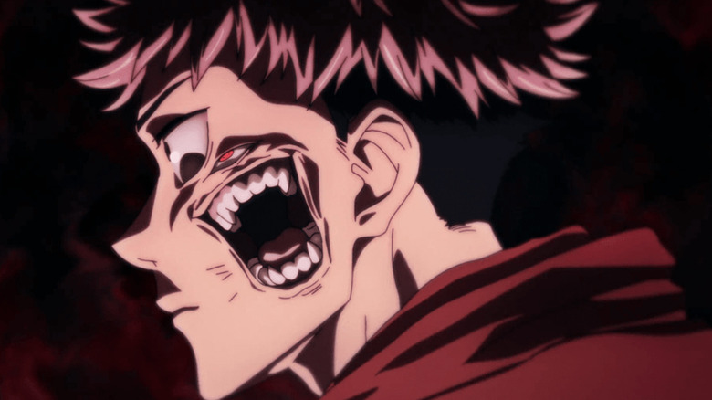
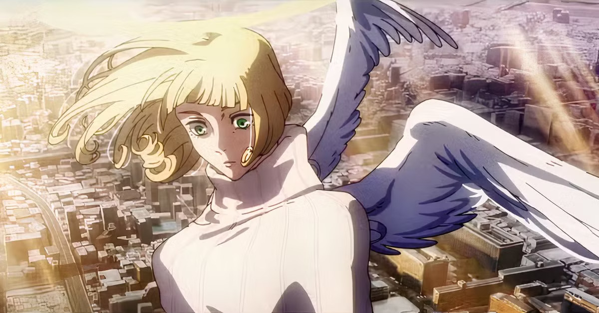

last updated 20 may 2026
Not only referring to human and robot configurations. Not necessarily involving bot or "technological" parts. For now, I'd define it as a con-fusion of seemingly disparate parts which produce an alloyed (not cleanly blended) third entity. The alloyedness produces friction and difference within the same body in terms of needs, material components, temperaments, and abilities, which may at times compete with each other.
Co-ownership, co-agentic, in negotation with each other, uneasily conjoined, mutually-possessing, symbiotic, co-dependent, always co-authoring and both involved -- whether in deeply fused ways (like conjunction aspects in astrology) or in constant oppositional tension (opposition aspects). I am unsure if being able to take turns would disqualify the hybrid entity from the category of "cyborg".
Seeking a stable co-existence, or subjugation of one part/ type/ category under the other? How is agency and access to action shared by or negotiated between the parts, which are simultaneously different and deeply conjoined & influenced by each other?
I have seen it argued that all women are cyborgs. Intuitively I agree. Intellectually I'll need time to study and unpack this premise.

Cyborg from 2003 Teen Titans

Yuri, Kumi, Kasumi of Alien Nine, adolescent girls who adjoin symbiotically with Borgs (who feed on their bodily waste such as sweat) in order to work in the Alien Party to capture alien intruders on campus

Mechamaru Jujutsu Kaisen, physically-disabled sorcerer who stays super cabled-up in a bathtub (?) and wrapped in bandages in order to protect his body and keep him alive, while operating a physical proxy in the wider world. His frail body is the result of Heavenly Restriction, a binding vow placed on him at birth which gives him higher cursed energy output in exchange for a greatly weakened body.

Yuji Itadori of Jujutsu Kaisen, host of Sukuna

Hana of Jujutsu Kaisen, who I was alerted to via Google Search when looking for female cyborgic characters. Apparently she hosts Angel, a god-like being, and switches between Angel and herself (?) in her body. I'll come back to this after watching Season 4 in 2027 lol.